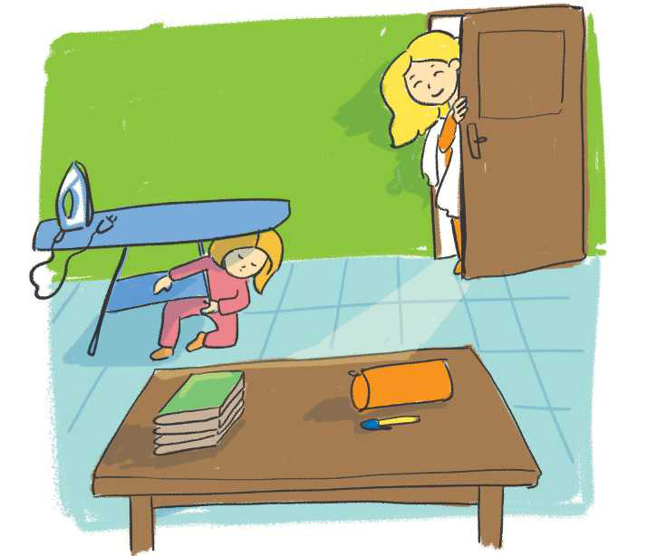

TEMATIKA 2: KARRIERA IME
2.Nëna e Ditës është mjeke

Nëna e Dritës zgjohet herët për të shkuar në punë. Çdo mbrëmje ajo përgatit uniformën e bardhë, që ta marrë me vete në punë. Dita tashmë e ka mësuar këtë rutinë. Pasi përfundon detyrat e shtëpisë, kujdeset që t’i përgatitë nënës së saj vendin për hekurosje. Pas darkës nëna e saj hekuros uniformën e bardhë. Duke mos harruar ta falënderojë Ditën për ndihmën e dhënë, e përqafon dhe i thotë “Natën e mirë!”.